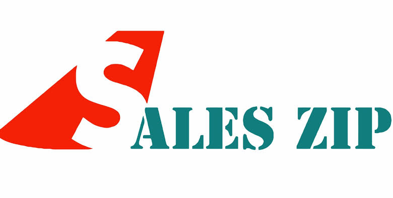

Holika Dahan

Sales Zip
Team Javed
English: Holika Dahan marks the beginning of Holi, symbolizing the victory of good over evil. This bonfire tradition is celebrated the night before Holi, where people gather to burn effigies of Holika, symbolizing the burning away of evil. It signifies the triumph of devotion and righteousness over negativity and evil forces. Families and communities come together, chanting prayers around the pyre.
Marathi: होलिका दहन हा सण होळीच्या आधीच्या रात्री साजरा केला जातो, जो चांगल्याचा वाईटावर विजय दर्शवतो. या दिवशी लोक होलिकाचे पुतळे जाळतात, ज्यामुळे वाईटपणा नष्ट होतो आणि भक्ती व नैतिकतेचा विजय साजरा केला जातो.
Bonfire during Holika Dahan

People gathered around the Holika Dahan pyre